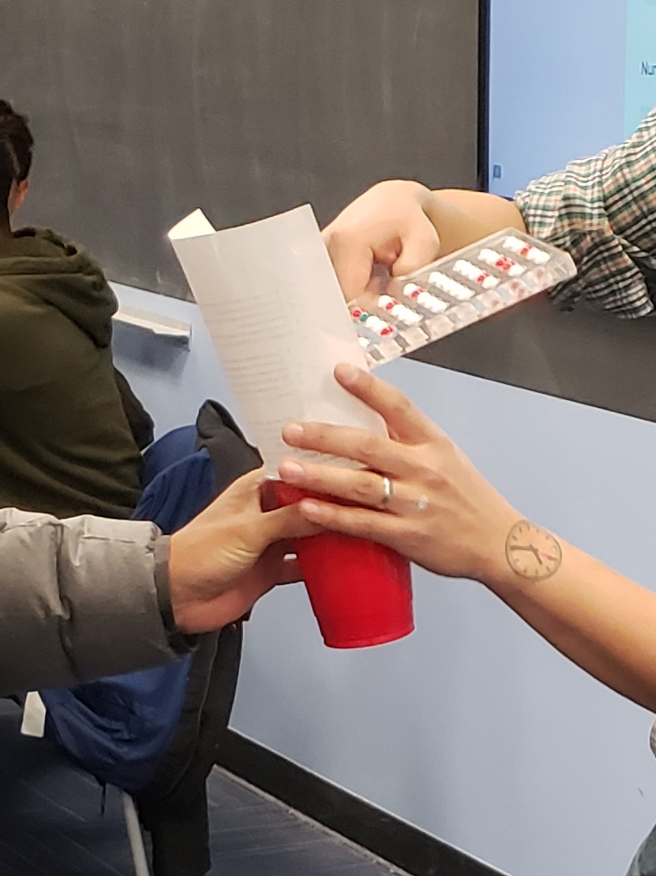
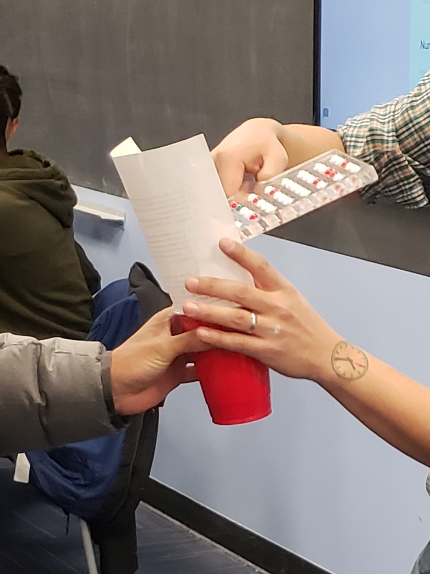

Chapter 7 Sampling
In this chapter, we kick off the third portion of this book on statistical inference by learning about sampling. The concepts behind sampling form the basis of confidence intervals and hypothesis testing, which we’ll cover in Chapters 8 and 9. We will see that the tools that you learned in the data science portion of this book, in particular data visualization and data wrangling, will also play an important role in the development of your understanding. As mentioned before, the concepts throughout this text all build into a culmination allowing you to “tell your story with data.”
Needed packages
Let’s load all the packages needed for this chapter (this assumes you’ve already installed them). Recall from our discussion in Section 4.4 that loading the tidyverse package by running library(tidyverse) loads the following commonly used data science packages all at once:
ggplot2for data visualizationdplyrfor data wranglingtidyrfor converting data to “tidy” formatreadrfor importing spreadsheet data into R- As well as the more advanced
purrr,tibble,stringr, andforcatspackages
If needed, read Section 1.3 for information on how to install and load R packages.
7.1 Sampling bowl activity
Let’s start with a hands-on activity.
7.1.1 What proportion of this bowl’s balls are red?
Take a look at the bowl in Figure 7.1. It has a certain number of red and a certain number of white balls all of equal size. Furthermore, it appears the bowl has been mixed beforehand, as there does not seem to be any coherent pattern to the spatial distribution of the red and white balls.
Let’s now ask ourselves, what proportion of this bowl’s balls are red?

FIGURE 7.1: A bowl with red and white balls.
One way to answer this question would be to perform an exhaustive count: remove each ball individually, count the number of red balls and the number of white balls, and divide the number of red balls by the total number of balls. However, this would be a long and tedious process.
7.1.2 Using the shovel once
Instead of performing an exhaustive count, let’s insert a shovel into the bowl as seen in Figure 7.2. Using the shovel, let’s remove \(5 \cdot 10 = 50\) balls, as seen in Figure 7.3.

FIGURE 7.2: Inserting a shovel into the bowl.

FIGURE 7.3: Removing 50 balls from the bowl.
Observe that 17 of the balls are red and thus 0.34 = 34% of the shovel’s balls are red. We can view the proportion of balls that are red in this shovel as a guess of the proportion of balls that are red in the entire bowl. While not as exact as doing an exhaustive count of all the balls in the bowl, our guess of 34% took much less time and energy to make.
However, say, we started this activity over from the beginning. In other words, we replace the 50 balls back into the bowl and start over. Would we remove exactly 17 red balls again? In other words, would our guess at the proportion of the bowl’s balls that are red be exactly 34% again? Maybe?
What if we repeated this activity several times following the process shown in Figure 7.4? Would we obtain exactly 17 red balls each time? In other words, would our guess at the proportion of the bowl’s balls that are red be exactly 34% every time? Surely not. Let’s repeat this exercise several times with the help of 33 groups of friends to understand how the value differs with repetition.
7.1.3 Using the shovel 33 times
Each of our 33 groups of friends will do the following:
- Use the shovel to remove 50 balls each.
- Count the number of red balls and thus compute the proportion of the 50 balls that are red.
- Return the balls into the bowl.
- Mix the contents of the bowl a little to not let a previous group’s results influence the next group’s.
 

FIGURE 7.4: Repeating sampling activity 33 times.
Each of our 33 groups of friends make note of their proportion of red balls from their sample collected. Each group then marks their proportion of their 50 balls that were red in the appropriate bin in a hand-drawn histogram as seen in Figure 7.5.

FIGURE 7.5: Constructing a histogram of proportions.
Recall from Section 2.5 that histograms allow us to visualize the distribution of a numerical variable. In particular, where the center of the values falls and how the values vary. A partially completed histogram of the first 10 out of 33 groups of friends’ results can be seen in Figure 7.6.

FIGURE 7.6: Hand-drawn histogram of first 10 out of 33 proportions.
Observe the following in the histogram in Figure 7.6:
- At the low end, one group removed 50 balls from the bowl with proportion red between 0.20 and 0.25.
- At the high end, another group removed 50 balls from the bowl with proportion between 0.45 and 0.5 red.
- However, the most frequently occurring proportions were between 0.30 and 0.35 red, right in the middle of the distribution.
- The shape of this distribution is somewhat bell-shaped.
Let’s construct this same hand-drawn histogram in R using your data visualization skills that you honed in Chapter 2. We saved our 33 groups of friends’ results in the tactile_prop_red data frame included in the moderndive package. Run the following to display the first 10 of 33 rows:
# A tibble: 33 × 4
group replicate red_balls prop_red
<chr> <int> <int> <dbl>
1 Ilyas, Yohan 1 21 0.42
2 Morgan, Terrance 2 17 0.34
3 Martin, Thomas 3 21 0.42
4 Clark, Frank 4 21 0.42
5 Riddhi, Karina 5 18 0.36
6 Andrew, Tyler 6 19 0.38
7 Julia 7 19 0.38
8 Rachel, Lauren 8 11 0.22
9 Daniel, Caroline 9 15 0.3
10 Josh, Maeve 10 17 0.34
# … with 23 more rowsObserve for each group that we have their names, the number of red_balls they obtained, and the corresponding proportion out of 50 balls that were red named prop_red. We also have a replicate variable enumerating each of the 33 groups. We chose this name because each row can be viewed as one instance of a replicated (in other words repeated) activity: using the shovel to remove 50 balls and computing the proportion of those balls that are red.
Let’s visualize the distribution of these 33 proportions using geom_histogram() with binwidth = 0.05 in Figure 7.7. This is a computerized and complete version of the partially completed hand-drawn histogram you saw in Figure 7.6. Note that setting boundary = 0.4 indicates that we want a binning scheme such that one of the bins’ boundary is at 0.4. This helps us to more closely align this histogram with the hand-drawn histogram in Figure 7.6.
ggplot(tactile_prop_red, aes(x = prop_red)) +
geom_histogram(binwidth = 0.05, boundary = 0.4, color = "white") +
labs(x = "Proportion of 50 balls that were red",
title = "Distribution of 33 proportions red") 
FIGURE 7.7: Distribution of 33 proportions based on 33 samples of size 50.
7.1.4 What did we just do?
What we just demonstrated in this activity is the statistical concept of sampling. We would like to know the proportion of the bowl’s balls that are red. Because the bowl has a large number of balls, performing an exhaustive count of the red and white balls would be time-consuming. We thus extracted a sample of 50 balls using the shovel to make an estimate. Using this sample of 50 balls, we estimated the proportion of the bowl’s balls that are red to be 34%.
Moreover, because we mixed the balls before each use of the shovel, the samples were randomly drawn. Because each sample was drawn at random, the samples were different from each other. Because the samples were different from each other, we obtained the different proportions red observed in Figure 7.7. This is known as the concept of sampling variation.
The purpose of this sampling activity was to develop an understanding of two key concepts relating to sampling:
- Understanding the effect of sampling variation.
- Understanding the effect of sample size on sampling variation.
In Section 7.2, we’ll mimic the hands-on sampling activity we just performed on a computer. This will allow us not only to repeat the sampling exercise much more than 33 times, but it will also allow us to use shovels with different numbers of slots than just 50.
Afterwards, we’ll present you with definitions, terminology, and notation related to sampling in Section 7.3. As in many disciplines, such necessary background knowledge may seem inaccessible and even confusing at first. However, as with many difficult topics, if you truly understand the underlying concepts and practice, practice, practice, you’ll be able to master them.
To tie the contents of this chapter to the real world, we’ll present an example of one of the most recognizable uses of sampling: polls. In Section 7.4 we’ll look at a particular case study: a 2013 poll on then U.S. President Barack Obama’s popularity among young Americans, conducted by Kennedy School’s Institute of Politics at Harvard University. To close this chapter, we’ll generalize the “sampling from a bowl” exercise to other sampling scenarios and present a theoretical result known as the Central Limit Theorem.
Learning check
(LC7.1) Why was it important to mix the bowl before we sampled the balls?
(LC7.2) Why is it that our 33 groups of friends did not all have the same numbers of balls that were red out of 50, and hence different proportions red?
7.2 Virtual sampling
In the previous Section 7.1, we performed a tactile sampling activity by hand. In other words, we used a physical bowl of balls and a physical shovel. We performed this sampling activity by hand first so that we could develop a firm understanding of the root ideas behind sampling. In this section, we’ll mimic this tactile sampling activity with a virtual sampling activity using a computer. In other words, we’ll use a virtual analog to the bowl of balls and a virtual analog to the shovel.
7.2.1 Using the virtual shovel once
Let’s start by performing the virtual analog of the tactile sampling exercise we performed in Section 7.1. We first need a virtual analog of the bowl seen in Figure 7.1. To this end, we included a data frame named bowl in the moderndive package. The rows of bowl correspond exactly with the contents of the actual bowl.
# A tibble: 2,400 × 2
ball_ID color
<int> <chr>
1 1 white
2 2 white
3 3 white
4 4 red
5 5 white
6 6 white
7 7 red
8 8 white
9 9 red
10 10 white
# … with 2,390 more rowsObserve that bowl has 2400 rows, telling us that the bowl contains 2400 equally sized balls. The first variable ball_ID is used as an identification variable as discussed in Subsection 1.4.4; none of the balls in the actual bowl are marked with numbers. The second variable color indicates whether a particular virtual ball is red or white. View the contents of the bowl in RStudio’s data viewer and scroll through the contents to convince yourself that bowl is indeed a virtual analog of the actual bowl in Figure 7.1.
Now that we have a virtual analog of our bowl, we next need a virtual analog to the shovel seen in Figure 7.2 to generate virtual samples of 50 balls. We’re going to use the rep_sample_n() function included in the moderndive package. This function allows us to take repeated, or replicated, samples of size n.

FIGURE 7.8: Three shovels to extract three different sample sizes.
If your goal is still to estimate the proportion of the bowl’s balls that are red, which shovel would you choose? In our experience, most people would choose the largest shovel with 100 slots because it would yield the “best” guess of the proportion of the bowl’s balls that are red. Let’s define some criteria for “best” in this subsection.
Using our newly developed tools for virtual sampling, let’s unpack the effect of having different sample sizes! In other words, let’s use rep_sample_n() with size set to 25, 50, and 100, respectively, while keeping the number of repeated/replicated samples at 1000:
- Virtually use the appropriate shovel to generate 1000 samples with
sizeballs. - Compute the resulting 1000 replicates of the proportion of the shovel’s balls that are red.
- Visualize the distribution of these 1000 proportions red using a histogram.
Run each of the following code segments individually and then compare the three resulting histograms.
# Segment 1: sample size = 25 ------------------------------
# 1.a) Virtually use shovel 1000 times
virtual_samples_25 <- bowl %>%
rep_sample_n(size = 25, reps = 1000)
# 1.b) Compute resulting 1000 replicates of proportion red
virtual_prop_red_25 <- virtual_samples_25 %>%
group_by(replicate) %>%
summarize(red = sum(color == "red")) %>%
mutate(prop_red = red / 25)
# 1.c) Plot distribution via a histogram
ggplot(virtual_prop_red_25, aes(x = prop_red)) +
geom_histogram(binwidth = 0.05, boundary = 0.4, color = "white") +
labs(x = "Proportion of 25 balls that were red", title = "25")
# Segment 2: sample size = 50 ------------------------------
# 2.a) Virtually use shovel 1000 times
virtual_samples_50 <- bowl %>%
rep_sample_n(size = 50, reps = 1000)
# 2.b) Compute resulting 1000 replicates of proportion red
virtual_prop_red_50 <- virtual_samples_50 %>%
group_by(replicate) %>%
summarize(red = sum(color == "red")) %>%
mutate(prop_red = red / 50)
# 2.c) Plot distribution via a histogram
ggplot(virtual_prop_red_50, aes(x = prop_red)) +
geom_histogram(binwidth = 0.05, boundary = 0.4, color = "white") +
labs(x = "Proportion of 50 balls that were red", title = "50")
# Segment 3: sample size = 100 ------------------------------
# 3.a) Virtually using shovel with 100 slots 1000 times
virtual_samples_100 <- bowl %>%
rep_sample_n(size = 100, reps = 1000)
# 3.b) Compute resulting 1000 replicates of proportion red
virtual_prop_red_100 <- virtual_samples_100 %>%
group_by(replicate) %>%
summarize(red = sum(color == "red")) %>%
mutate(prop_red = red / 100)
# 3.c) Plot distribution via a histogram
ggplot(virtual_prop_red_100, aes(x = prop_red)) +
geom_histogram(binwidth = 0.05, boundary = 0.4, color = "white") +
labs(x = "Proportion of 100 balls that were red", title = "100") For easy comparison, we present the three resulting histograms in a single row with matching x and y axes in Figure 7.9.

FIGURE 7.9: Comparing the distributions of proportion red for different sample sizes.
Observe that as the sample size increases, the variation of the 1000 replicates of the proportion of red decreases. In other words, as the sample size increases, there are fewer differences due to sampling variation and the distribution centers more tightly around the same value. Eyeballing Figure 7.9, all three histograms appear to center around roughly 40%.
We can be numerically explicit about the amount of variation in our three sets of 1000 values of prop_red using the standard deviation. A standard deviation is a summary statistic that measures the amount of variation within a numerical variable (see Appendix A.1 for a brief discussion on the properties of the standard deviation). For all three sample sizes, let’s compute the standard deviation of the 1000 proportions red by running the following data wrangling code that uses the sd() summary function.
# n = 25
virtual_prop_red_25 %>%
summarize(sd = sd(prop_red))
# n = 50
virtual_prop_red_50 %>%
summarize(sd = sd(prop_red))
# n = 100
virtual_prop_red_100 %>%
summarize(sd = sd(prop_red))Let’s compare these three measures of distributional variation in Table 7.1.
| Number of slots in shovel | Standard deviation of proportions red |
|---|---|
| 25 | 0.094 |
| 50 | 0.069 |
| 100 | 0.045 |
As we observed in Figure 7.9, as the sample size increases, the variation decreases. In other words, there is less variation in the 1000 values of the proportion red. So as the sample size increases, our guesses at the true proportion of the bowl’s balls that are red get more precise.
Learning check
(LC7.6) In Figure 7.9, we used shovels to take 1000 samples each, computed the resulting 1000 proportions of the shovel’s balls that were red, and then visualized the distribution of these 1000 proportions in a histogram. We did this for shovels with 25, 50, and 100 slots in them. As the size of the shovels increased, the histograms got narrower. In other words, as the size of the shovels increased from 25 to 50 to 100, did the 1000 proportions
- A. vary less,
- B. vary by the same amount, or
- C. vary more?
(LC7.7) What summary statistic did we use to quantify how much the 1000 proportions red varied?
- A. The interquartile range
- B. The standard deviation
- C. The range: the largest value minus the smallest.
7.3 Sampling framework
In both our tactile and our virtual sampling activities, we used sampling for the purpose of estimation. We extracted samples in order to estimate the proportion of the bowl’s balls that are red. We used sampling as a less time-consuming approach than performing an exhaustive count of all the balls. Our virtual sampling activity built up to the results shown in Figure 7.9 and Table 7.1: comparing 1000 proportions red based on samples of size 25, 50, and 100. This was our first attempt at understanding two key concepts relating to sampling for estimation:
- The effect of sampling variation on our estimates.
- The effect of sample size on sampling variation.
Now that you have built some intuition relating to sampling, let’s now attach words and labels to the various concepts we’ve explored so far. Specifically in the next section, we’ll introduce terminology and notation as well as statistical definitions related to sampling. This will allow us to succinctly summarize and refer to the ideas behind sampling for the rest of this book.
7.3.1 Terminology and notation
Let’s now attach words and labels to the various sampling concepts we’ve seen so far by introducing some terminology and mathematical notation. While they may seem daunting at first, we’ll make sure to tie each of them to sampling bowl activities you performed earlier. Furthermore, throughout this book we’ll give you plenty of opportunity for practice, as the best method for mastering these terms is repetition.
The first set of terms and notation relate to populations:
- A population is a collection of individuals or observations we are interested in. This is also commonly denoted as a study population. We mathematically denote the population’s size using upper-case \(N\).
- A population parameter is some numerical summary about the population that is unknown but you wish you knew. For example, when this quantity is a mean like the average height of all Canadians, the population parameter of interest is the population mean.
- A census is an exhaustive enumeration or counting of all \(N\) individuals in the population. We do this in order to compute the population parameter’s value exactly. Of note is that as the number \(N\) of individuals in our population increases, conducting a census gets more expensive (in terms of time, energy, and money).
So in our sampling activities, the population is the collection of \(N\) = 2400 identically sized red and white balls in the bowl shown in Figure 7.1. Recall that we also represented the bowl “virtually” in the data frame bowl:
# A tibble: 2,400 × 2
ball_ID color
<int> <chr>
1 1 white
2 2 white
3 3 white
4 4 red
5 5 white
6 6 white
7 7 red
8 8 white
9 9 red
10 10 white
# … with 2,390 more rowsThe population parameter here is the proportion of the bowl’s balls that are red. Whenever we’re interested in a proportion of some value in a population, the population parameter has a specific name: the population proportion. We denote population proportions with the letter \(p\). We’ll see later on in Table 7.5 that we can also consider other types of population parameters, like population means and population regression slopes.
In order to compute this population proportion \(p\) exactly, we need to first conduct a census by going through all \(N\) = 2400 and counting the number that are red. We then divide this count by 2400 to obtain the proportion red.
You might be now asking yourself: “Wait. I understand that performing a census on the actual bowl would take a long time. But can’t we conduct a ‘virtual’ census using the virtual bowl?” You are absolutely correct! In fact when the authors of this book created the bowl data frame, they made its contents match the contents of actual bowl not by doing a census, but by reading the contents written on the box the bowl came in!
Let’s conduct this “virtual” census by using the same dplyr verbs you used earlier to count the number of balls that are red:
# A tibble: 1 × 1
red
<int>
1 900Since 900 of the 2400 are red, the proportion is 900/2400 = 0.375 = 37.5%. So we know the value of the population parameter: in our case, the population proportion \(p\) is equal to 0.375.
At this point, you might be further asking yourself: “If we had a way of knowing that the proportion of the balls that are red is 37.5%, then why did we do any sampling?” Great question! Normally, you wouldn’t do any sampling! However, the sampling activities we did this chapter are merely simulations of how sampling is done in real-life! We perform these simulations in order to study:
- The effect of sampling variation on our estimates.
- The effect of sample size on sampling variation.
As we’ll see in Section 7.4 on polls, in real-life sampling not only will the population size \(N\) be very large making a census expensive, but sometimes we won’t even know how big the population is! For now however, we press on with our next set of terms and notation.
The second set of terms and notation relate to samples:
- Sampling is the act of collecting a sample from the population, which we generally only do when we can’t perform a census. We mathematically denote the sample size using lower case \(n\), as opposed to upper case \(N\) which denotes the population’s size. Typically the sample size \(n\) is much smaller than the population size \(N\). Thus sampling is a much cheaper alternative than performing a census.
- A point estimate, also known as a sample statistic, is a summary statistic computed from a sample that estimates the unknown population parameter.
So previously we conducted sampling using a shovel with 50 slots to extract samples of size \(n\) = 50. To perform the virtual analog of this sampling, recall that we used the rep_sample_n() function as follows:
# A tibble: 50 × 3
# Groups: replicate [1]
replicate ball_ID color
<int> <int> <chr>
1 1 1970 white
2 1 842 red
3 1 2287 white
4 1 599 white
5 1 108 white
6 1 846 red
7 1 390 red
8 1 344 white
9 1 910 white
10 1 1485 white
# … with 40 more rowsUsing the sample of 50 balls contained in virtual_shovel, we generated an estimate of the proportion of the bowl’s balls that are red prop_red
# A tibble: 1 × 3
replicate num_red prop_red
<int> <int> <dbl>
1 1 12 0.24So in our case, the value of prop_red is the point estimate of the population proportion \(p\) since it estimates the latter’s value. Furthermore, this point estimate has a specific name when considering proportions: the sample proportion. It is denoted using \(\widehat{p}\) because it is a common convention in statistics to use a “hat” symbol to denote point estimates.
The third set of terms relate to sampling methodology: the method used to collect samples. You’ll see here and throughout the rest of your book that the way you collect samples directly influences their quality.
- A sample is said to be representative if it roughly “looks like” the population. In other words, if the sample’s characteristics are a “good” representation of the population’s characteristics.
- We say a sample is generalizable if any results based on the sample can generalize to the population. In other words, if we can make “good” guesses about the population using the sample.
- We say a sampling procedure is biased if certain individuals in a population have a higher chance of being included in a sample than others. We say a sampling procedure is unbiased if every individual in a population has an equal chance of being sampled.
We say a sample of \(n\) balls extracted using our shovel is representative of the population if it’s contents “roughly resemble” the contents of the bowl. If so, then the proportion of the shovel’s balls that are red can generalize to the proportion of the bowl’s \(N\) = 2400 balls that are red. Or expressed differently, \(\widehat{p}\) is a “good guess” of \(p\). Now say we cheated when using the shovel and removed a number of white balls in favor of red balls. Then this sample would be biased towards red balls, and thus the sample would no longer be representative of the bowl.
The fourth and final set of terms and notation relate to the goal of sampling:
- One way to ensure that a sample is unbiased and representative of the population is by using random sampling
- Inference is the act of “making a guess” about some unknown. Statistical inference is the act of making a guess about a population using a sample.
In our case, since the rep_sample_n() function uses your computer’s random number generator, we were in fact performing random sampling.
Let’s now put all four sets of terms and notation together, keeping our sampling activities in mind:
- Since we extracted a sample of \(n\) = 50 balls at random, we mixed all of the equally sized balls before using the shovel, then
- the contents of the shovel are unbiased and representative of the contents of the bowl, thus
- any result based on the shovel can generalize to the bowl, thus
- the sample proportion \(\widehat{p}\) of the \(n\) = 50 balls in the shovel that are red is a “good guess” of the population proportion \(p\) of the bowl’s \(N\) = 2400 balls that are red, thus
- instead of conducting a census of the 2400 balls in the bowl, we can infer about the bowl using the sample from the shovel.
What you have been performing is statistical inference. This is one of the most important concepts in all of statistics. So much so, we included this term in the title of our book: “Statistical Inference via Data Science”. More generally speaking,
- If the sampling of a sample of size \(n\) is done at random, then
- the sample is unbiased and representative of the population of size \(N\), thus
- any result based on the sample can generalize to the population, thus
- the point estimate is a “good guess” of the unknown population parameter, thus
- instead of performing a census, we can infer about the population using sampling.
In the upcoming Chapter 8 on confidence intervals, we’ll introduce the infer package, which makes statistical inference “tidy” and transparent. It is why this third portion of the book is called “Statistical inference via infer.”
Learning check
(LC7.8) In the case of our bowl activity, what is the population parameter? Do we know its value?
(LC7.9) What would performing a census in our bowl activity correspond to? Why did we not perform a census?
(LC7.10) What purpose do point estimates serve in general? What is the name of the point estimate specific to our bowl activity? What is its mathematical notation?
(LC7.11) How did we ensure that our tactile samples using the shovel were random?
(LC7.12) Why is it important that sampling be done at random?
(LC7.13) What are we inferring about the bowl based on the samples using the shovel?
7.3.2 Statistical definitions
To further attach words and labels to the various sampling concepts we’ve seen so far, we also introduce some important statistical definitions related to sampling. As a refresher of our 1000 repeated/replicated virtual samples of size \(n\) = 25, \(n\) = 50, and \(n\) = 100 in Section 7.2, let’s display Figure 7.9 again as Figure 7.10.
FIGURE 7.10: Previously seen three distributions of the sample proportion \(\widehat{p}\).
These types of distributions have a special name: sampling distributions of point estimates. Their visualization displays the effect of sampling variation on the distribution of any point estimate, in this case, the sample proportion \(\widehat{p}\). Using these sampling distributions, for a given sample size \(n\), we can make statements about what values we can typically expect. Unfortunately, the term sampling distribution is often confused with a sample’s distribution which is merely the distribution of the values in a single sample.
For example, observe the centers of all three sampling distributions: they are all roughly centered around 0.4 = 40%. Furthermore, observe that while we are somewhat likely to observe sample proportions of red balls of 0.2 = 20% when using the shovel with 25 slots, we will almost never observe a proportion of 20% when using the shovel with 100 slots. Observe also the effect of sample size on the sampling variation. As the sample size \(n\) increases from 25 to 50 to 100, the variation of the sampling distribution decreases and thus the values cluster more and more tightly around the same center of around 40%. We quantified this variation using the standard deviation of our sample proportions in Table 7.1, which we display again as Table 7.2:
| Number of slots in shovel | Standard deviation of proportions red |
|---|---|
| 25 | 0.094 |
| 50 | 0.069 |
| 100 | 0.045 |
So as the sample size increases, the standard deviation of the proportion of red balls decreases. This type of standard deviation has another special name: standard error of a point estimate. Standard errors quantify the effect of sampling variation induced on our estimates. In other words, they quantify how much we can expect different proportions of a shovel’s balls that are red to vary from one sample to another sample to another sample, and so on. As a general rule, as sample size increases, the standard error decreases.
Similarly to confusion between sampling distributions with a sample’s distribution, people often confuse the standard error with the standard deviation. This is especially the case since a standard error is itself a kind of standard deviation. The best advice we can give is that a standard error is merely a kind of standard deviation: the standard deviation of any point estimate from sampling. In other words, all standard errors are standard deviations, but not every standard deviation is necessarily a standard error.
To help reinforce these concepts, let’s re-display Figure 7.9 but using our new terminology, notation, and definitions relating to sampling in Figure 7.11.

FIGURE 7.11: Three sampling distributions of the sample proportion \(\widehat{p}\).
Furthermore, let’s re-display Table 7.1 but using our new terminology, notation, and definitions relating to sampling in Table 7.3.
| Sample size (n) | Standard error of \(\widehat{p}\) |
|---|---|
| n = 25 | 0.094 |
| n = 50 | 0.069 |
| n = 100 | 0.045 |
Remember the key message of this last table: that as the sample size \(n\) goes up, the “typical” error of your point estimate will go down, as quantified by the standard error.
Learning check
(LC7.14) What purpose did the sampling distributions serve?
(LC7.15) What does the standard error of the sample proportion \(\widehat{p}\) quantify?
7.3.3 The moral of the story
Let’s recap this section so far. We’ve seen that if a sample is generated at random, then the resulting point estimate is a “good guess” of the true unknown population parameter. In our sampling activities, since we made sure to mix the balls first before extracting a sample with the shovel, the resulting sample proportion \(\widehat{p}\) of the shovel’s balls that were red was a “good guess” of the population proportion \(p\) of the bowl’s balls that were red.
However, what do we mean by our point estimate being a “good guess”? Sometimes, we’ll get an estimate that is less than the true value of the population parameter, while at other times we’ll get an estimate that is greater. This is due to sampling variation. However, despite this sampling variation, our estimates will “on average” be correct and thus will be centered at the true value. This is because our sampling was done at random and thus in an unbiased fashion.
In our sampling activities, sometimes our sample proportion \(\widehat{p}\) was less than the true population proportion \(p\), while at other times it was greater. This was due to the sampling variability. However, despite this sampling variation, our sample proportions \(\widehat{p}\) were “on average” correct and thus were centered at the true value of the population proportion \(p\). This is because we mixed our bowl before taking samples and thus the sampling was done at random and thus in an unbiased fashion. This is also known as having an accurate estimate.
Recall from earlier that the value of the population proportion \(p\) of the \(N\) = 2400 balls in the bowl was 900/2400 = 0.375 = 37.5%. We computed this value by performing a virtual census of bowl. Let’s re-display our sampling distributions from Figures 7.9 and 7.11, but now with a vertical red line marking the true population proportion \(p\) of balls that are red = 37.5% in Figure 7.12. We see that while there is a certain amount of error in the sample proportions \(\widehat{p}\) for all three sampling distributions, on average the \(\widehat{p}\) are centered at the true population proportion red \(p\).
FIGURE 7.12: Three sampling distributions with population proportion \(p\) marked by vertical line.
We also saw in this section that as your sample size \(n\) increases, your point estimates will vary less and less and be more and more concentrated around the true population parameter. This variation is quantified by the decreasing standard error. In other words, the typical error of your point estimates will decrease. In our sampling exercise, as the sample size increased, the variation of our sample proportions \(\widehat{p}\) decreased. You can observe this behavior in Figure 7.12. This is also known as having a precise estimate.
So random sampling ensures our point estimates are accurate, while on the other hand having a large sample size ensures our point estimates are precise. While the terms “accuracy” and “precision” may sound like they mean the same thing, there is a subtle difference. Accuracy describes how “on target” our estimates are, whereas precision describes how “consistent” our estimates are. Figure 7.13 illustrates the difference.

FIGURE 7.13: Comparing accuracy and precision.
At this point, you might be asking yourself: “Why did we take 1000 repeated samples of size n = 25, 50, and 100? Shouldn’t we be taking only one sample that’s as large as possible?”. If you did ask yourself these questions, your suspicion is correct! Recall from earlier when we asked ourselves “If we had a way of knowing that the proportion of the balls that are red is 37.5%, then why did we do any sampling?” Similarly, we took 1000 repeated samples as a simulation of how sampling is done in real-life! We used these simulations to study:
- The effect of sampling variation on our estimates.
- The effect of sample size on sampling variation.
This is not how sampling is done in real life! In a real-life scenario, we wouldn’t take 1000 repeated/replicated samples, but rather a single sample that’s as large as we can afford. In Section 7.4, we’re going to study a real-life example of sampling: polls.
Learning check
(LC7.16) The table that follows is a version of Table 7.3 matching sample sizes \(n\) to different standard errors of the sample proportion \(\widehat{p}\), but with the rows randomly re-ordered and the sample sizes removed. Fill in the table by matching the correct sample sizes to the correct standard errors.
| Sample size | Standard error of \(\widehat{p}\) |
|---|---|
| n = | 0.094 |
| n = | 0.045 |
| n = | 0.069 |
For the following four Learning checks, let the estimate be the sample proportion \(\widehat{p}\): the proportion of a shovel’s balls that were red. It estimates the population proportion \(p\): the proportion of the bowl’s balls that were red.
(LC7.17) What is the difference between an accurate and a precise estimate?
(LC7.18) How do we ensure that an estimate is accurate? How do we ensure that an estimate is precise?
(LC7.19) In a real-life situation, we would not take 1000 different samples to infer about a population, but rather only one. Then, what was the purpose of our exercises where we took 1000 different samples?
(LC7.20) Figure 7.13 with the targets shows four combinations of “accurate versus precise” estimates. Draw four corresponding sampling distributions of the sample proportion \(\widehat{p}\), like the one in the leftmost plot in Figure 7.12.
7.4 Case study: Polls
Let’s now switch gears to a more realistic sampling scenario than our bowl activity: a poll. In practice, pollsters do not take 1000 repeated samples as we did in our previous sampling activities, but rather take only a single sample that’s as large as possible.
On December 4, 2013, National Public Radio in the US reported on a poll of President Obama’s approval rating among young Americans aged 18-29 in an article, “Poll: Support For Obama Among Young Americans Eroding.” The poll was conducted by the Kennedy School’s Institute of Politics at Harvard University. A quote from the article:
After voting for him in large numbers in 2008 and 2012, young Americans are souring on President Obama.
According to a new Harvard University Institute of Politics poll, just 41 percent of millennials — adults ages 18-29 — approve of Obama’s job performance, his lowest-ever standing among the group and an 11-point drop from April.
Let’s tie elements of the real-life poll in this news article with our “tactile” and “virtual” bowl activity from Sections 7.1 and 7.2 using the terminology, notations, and definitions we learned in Section 7.3. You’ll see that our sampling activity with the bowl is an idealized version of what pollsters are trying to do in real life.
First, who is the (study) population of \(N\) individuals or observations of interest?
- Bowl: \(N\) = 2400 identically sized red and white balls
- Obama poll: \(N\) = ? young Americans aged 18-29
Second, what is the population parameter?
- Bowl: The population proportion \(p\) of all the balls in the bowl that are red.
- Obama poll: The population proportion \(p\) of all young Americans who approve of Obama’s job performance.
Third, what would a census look like?
- Bowl: Manually going over all \(N\) = 2400 balls and exactly computing the population proportion \(p\) of the balls that are red.
- Obama poll: Locating all \(N\) young Americans and asking them all if they approve of Obama’s job performance. In this case, we don’t even know what the population size \(N\) is!
Fourth, how do you perform sampling to obtain a sample of size \(n\)?
- Bowl: Using a shovel with \(n\) slots.
- Obama poll: One method is to get a list of phone numbers of all young Americans and pick out \(n\) phone numbers. In this poll’s case, the sample size of this poll was \(n = 2089\) young Americans.
Fifth, what is your point estimate also known as the sample statistic of the unknown population parameter?
- Bowl: The sample proportion \(\widehat{p}\) of the balls in the shovel that were red.
- Obama poll: The sample proportion \(\widehat{p}\) of young Americans in the sample that approve of Obama’s job performance. In this poll’s case, \(\widehat{p} = 0.41 = 41\%\), the quoted percentage in the second paragraph of the article.
Sixth, is the sampling procedure representative?
- Bowl: Are the contents of the shovel representative of the contents of the bowl? Because we mixed the bowl before sampling, we can feel confident that they are.
- Obama poll: Is the sample of \(n = 2089\) young Americans representative of all young Americans aged 18-29? This depends on whether the sampling was random.
Seventh, are the samples generalizable to the greater population?
- Bowl: Is the sample proportion \(\widehat{p}\) of the shovel’s balls that are red a “good guess” of the population proportion \(p\) of the bowl’s balls that are red? Given that the sample was representative, the answer is yes.
- Obama poll: Is the sample proportion \(\widehat{p}\) = 0.41 of the sample of young Americans who supported Obama a “good guess” of the population proportion \(p\) of all young Americans who supported Obama at this time in 2013? In other words, can we confidently say that roughly 41% of all young Americans approved of Obama at the time of the poll? Again, this depends on whether the sampling was random.
Eighth, is the sampling procedure unbiased? In other words, do all observations have an equal chance of being included in the sample?
- Bowl: Since each ball was equally sized and we mixed the bowl before using the shovel, each ball had an equal chance of being included in a sample and hence the sampling was unbiased.
- Obama poll: Did all young Americans have an equal chance at being represented in this poll? Again, this depends on whether the sampling was random.
Ninth and lastly, was the sampling done at random?
- Bowl: As long as you mixed the bowl sufficiently before sampling, your samples would be random.
- Obama poll: Was the sample conducted at random? We can’t answer this question without knowing about the sampling methodology used by Kennedy School’s Institute of Politics at Harvard University. We’ll discuss this more at the end of this section.
In other words, the poll by Kennedy School’s Institute of Politics at Harvard University can be thought of as an instance of using the shovel to sample balls from the bowl. Furthermore, if another polling company conducted a similar poll of young Americans at roughly the same time, they would likely get a different estimate than 41%. This is due to sampling variation.
Let’s now revisit the sampling paradigm from Subsection 7.3.1:
In general:
- If the sampling of a sample of size \(n\) is done at random, then
- the sample is unbiased and representative of the population of size \(N\), thus
- any result based on the sample can generalize to the population, thus
- the point estimate is a “good guess” of the unknown population parameter, thus
- instead of performing a census, we can infer about the population using sampling.
Specific to the bowl:
- Since we extracted a sample of \(n\) = 50 balls at random, in other words we mixed all of the equally sized balls before using the shovel, then
- the contents of the shovel are unbiased and representative of the contents of the bowl, thus
- any result based on the shovel can generalize to the bowl, thus
- the sample proportion \(\widehat{p}\) of the \(n\) = 50 balls in the shovel that are red is a “good guess” of the population proportion \(p\) of the bowl’s \(N\) = 2400 balls that are red, thus
- instead of conducting a census of the 2400 balls in the bowl, we can infer about the bowl using the sample from the shovel.
Specific to the Obama poll:
- If we had a way of contacting a randomly chosen sample of 2089 young Americans and polling their approval of President Obama in 2013, then
- these 2089 young Americans would be an unbiased and representative sample of all young Americans in 2013, thus
- any results based on this sample of 2089 young Americans can generalize to the entire population of all young Americans in 2013, thus
- the reported sample approval rating of 41% of these 2089 young Americans is a good guess of the true approval rating among all young Americans in 2013, thus
- instead of performing an expensive census of all young Americans in 2013, we can infer about all young Americans in 2013 using polling.
So as you can see, it was critical for the sample obtained by Kennedy School’s Institute of Politics at Harvard University to be truly random in order to infer about all young Americans’ opinions about Obama. Was their sample truly random? It’s hard to answer such questions without knowing about the sampling methodology they used. For example, if this poll was conducted using only mobile phone numbers, people without mobile phones would be left out and therefore not represented in the sample. What about if Kennedy School’s Institute of Politics at Harvard University conducted this poll on an internet news site? Then people who don’t read this particular internet news site would be left out. Ensuring that our samples were random was easy to do in our sampling bowl exercises; however, in a real-life situation like the Obama poll, this is much harder to do.
Learning check
Comment on the representativeness of the following sampling methodologies:
(LC7.21) The Royal Air Force wants to study how resistant all their airplanes are to bullets. They study the bullet holes on all the airplanes on the tarmac after an air battle against the Luftwaffe (German Air Force).
(LC7.22) Imagine it is 1993, a time when almost all households had landlines. You want to know the average number of people in each household in your city. You randomly pick out 500 phone numbers from the phone book and conduct a phone survey.
(LC7.23) You want to know the prevalence of illegal downloading of TV shows among students at a local college. You get the emails of 100 randomly chosen students and ask them, “How many times did you download a pirated TV show last week?”.
(LC7.24) A local college administrator wants to know the average income of all graduates in the last 10 years. So they get the records of five randomly chosen graduates, contact them, and obtain their answers.
7.5 Central Limit Theorem
This chapter began with (virtual) access to a large bowl of balls (our population) and a desire to figure out the proportion of red balls. Despite having access to this population, in reality, you almost never will have access to the population, either because the population is too large, ever changing, or too expensive to take a census of. Accepting this reality means accepting that we need to use statistical inference.
In Section 7.3.1, we stated that “statistical inference is the act of making a guess about a population using a sample.” But how do we do this inference? In the previous section, we defined the sampling framework only to state that in reality we take one large sample, instead of many samples as done in the sampling framework (which we modeled physically by taking many samples from the bowl).
In reality, we take only one sample and use that one sample to make statements about the population parameter. This ability of making statements about the population is allowable by a famous theorem, or mathematically proven truth, called the Central Limit Theorem. What you visualized in Figures 7.9 and 7.11 and summarized in Tables 7.1 and 7.3 was a demonstration of this theorem. It loosely states that when sample means are based on larger and larger sample sizes, the sampling distribution of these sample means becomes both more and more normally shaped and more and more narrow.
In other words, as our sample size gets larger (1) the sampling distribution of a point estimate (like a sample proportion) increasingly follows a normal distribution and (2) the variation of these sampling distributions gets smaller, as quantified by their standard errors. We discuss the properties of the normal distribution in Appendix A.2.
Shuyi Chiou, Casey Dunn, and Pathikrit Bhattacharyya created a 3-minute and 38-second video at https://youtu.be/jvoxEYmQHNM explaining this crucial statistical theorem using the average weight of wild bunny rabbits and the average wingspan of dragons as examples. Figure 7.14 shows a preview of this video.

FIGURE 7.14: Preview of Central Limit Theorem video.
Here’s what is so surprising about the Central Limit Theorem: regardless of the shape of the underlying population distribution, the sampling distribution of means (such as the sample mean of bunny weights or the sample mean of the length of dragon wings) and proportions (such as the sample proportion red in our shovels) will be normal. Normal distributions are defined by where they are centered and how wide they are, and the Central Limit Theorem gives us both:
- The sampling distribution of the point estimate is centered at the true population parameter
- We have an estimate for how wide the sampling distribution of the point estimate is, given by the standard error (which we will discuss further in Chapter 8)
What the Central Limit Theorem creates for us is a ladder between a single sample and the population. By the Central Limit Theorem, we can say that (1) our sample’s point estimate is drawn from a normal distribution centered at the true population parameter and (2)that the width of that normal distribution is governed by the standard error of our point estimate. Relating this to our bowl, if we pull one sample and get the sample proportion of red balls \(\widehat{p}\), this value of \(\widehat{p}\) is drawn from the normal curve centered at the true population proportion of red balls \(p\) with the computed standard error.
7.6 Conclusion
7.6.1 Sampling scenarios
In this chapter, we performed both tactile and virtual sampling exercises to infer about an unknown proportion. We also presented a case study of sampling in real life with polls. In each case, we used the sample proportion \(\widehat{p}\) to estimate the population proportion \(p\). However, we are not just limited to scenarios related to proportions. In other words, we can use sampling to estimate other population parameters using other point estimates as well. We present four more such scenarios in Table 7.5.
| Scenario | Population parameter | Notation | Point estimate | Symbol(s) |
|---|---|---|---|---|
| 1 | Population proportion | \(p\) | Sample proportion | \(\widehat{p}\) |
| 2 | Population mean | \(\mu\) | Sample mean | \(\overline{x}\) or \(\widehat{\mu}\) |
| 3 | Difference in population proportions | \(p_1 - p_2\) | Difference in sample proportions | \(\widehat{p}_1 - \widehat{p}_2\) |
| 4 | Difference in population means | \(\mu_1 - \mu_2\) | Difference in sample means | \(\overline{x}_1 - \overline{x}_2\) |
| 5 | Population regression slope | \(\beta_1\) | Fitted regression slope | \(b_1\) or \(\widehat{\beta}_1\) |
In the rest of this book, we’ll cover all the remaining scenarios as follows:
- In Chapter 8, we’ll cover examples of statistical inference for
- Scenario 2: The mean age \(\mu\) of all pennies in circulation in the US.
- Scenario 3: The difference \(p_1 - p_2\) in the proportion of people who yawn when seeing someone else yawn first minus the proportion of people who yawn without seeing someone else yawn first. This is an example of two-sample inference.
- In Chapter 9, we’ll cover an example of statistical inference for
- Scenario 4: The difference \(\mu_1 - \mu_2\) in mean IMDb ratings for action and romance movies. This is another example of two-sample inference.
- In Chapter 10, we’ll cover an example of statistical inference for regression by revisiting the regression models for teaching score as a function of various instructor demographic variables you saw in Chapters 5 and 6.
- Scenario 5: The slope \(\beta_1\) of the population regression line.
7.6.2 Additional resources
An R script file of all R code used in this chapter is available here.
7.6.3 What’s to come?
Recall in our Obama poll case study in Section 7.4 that based on this particular sample, the best guess by Kennedy School’s Institute of Politics at Harvard University of the U.S. President Obama’s approval rating among all young Americans was 41%. However, this isn’t the end of the story. If you read the article further, it states:
The online survey of 2,089 adults was conducted from Oct. 30 to Nov. 11, just weeks after the federal government shutdown ended and the problems surrounding the implementation of the Affordable Care Act began to take center stage. The poll’s margin of error was plus or minus 2.1 percentage points.
Note the term margin of error, which here is “plus or minus 2.1 percentage points.” Most polls won’t produce an estimate that’s perfectly right; there will always be a certain amount of error caused by sampling variation. The margin of error of plus or minus 2.1 percentage points is saying that a typical range of errors for polls of this type is about \(\pm\) 2.1%, in words from about 2.1% too small to about 2.1% too big. We can restate this as the interval of \([41\% - 2.1\%, 41\% + 2.1\%] = [37.9\%, 43.1\%]\) (this notation indicates the interval contains all values between 37.9% and 43.1%, including the end points of 37.9% and 43.1%). We’ll see in the next chapter that such intervals are known as confidence intervals.